PEOPLE WHO CHANGED THE WORLD
Great People
Change the World.
Learn about famous sports players, history makers and scientists.
EXPLORE BIOGRAPHIES
All Characters
Discover inspiring people from history, sports and science.
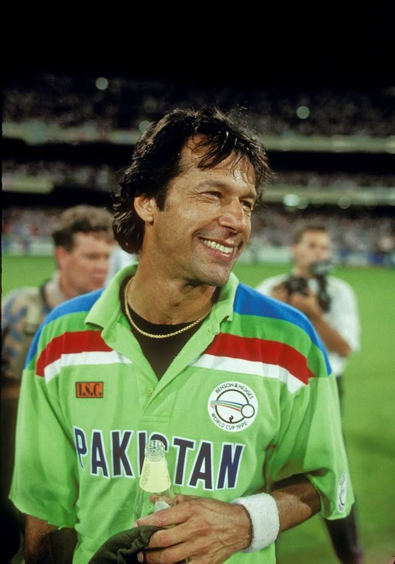
Imran Khan
Pakistani cricket captain.
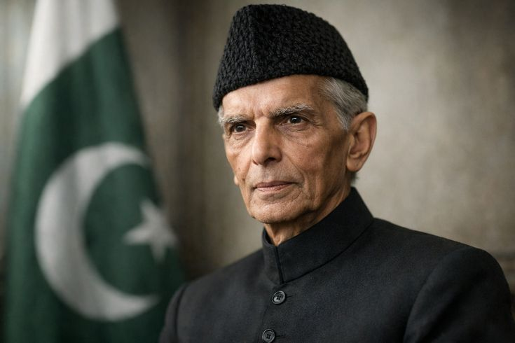
Quaid-e-Azam
Founder of Pakistan.
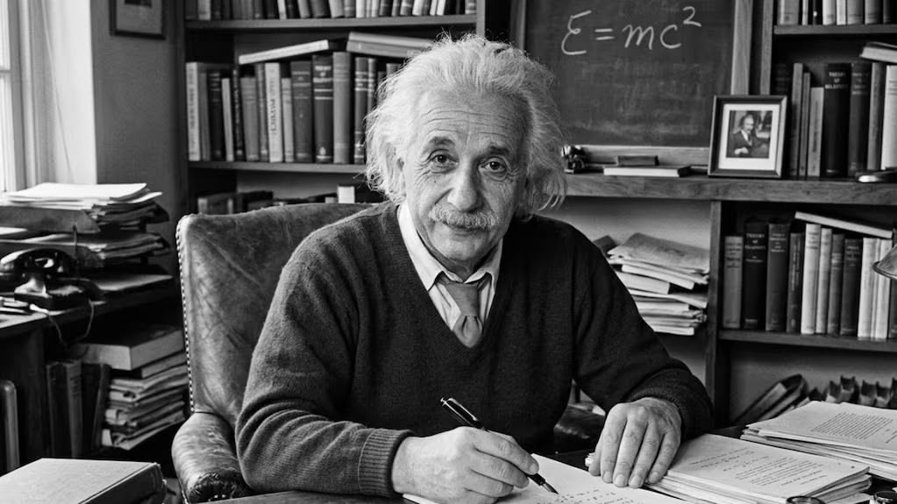
Albert Einstein
Theoretical physicist.
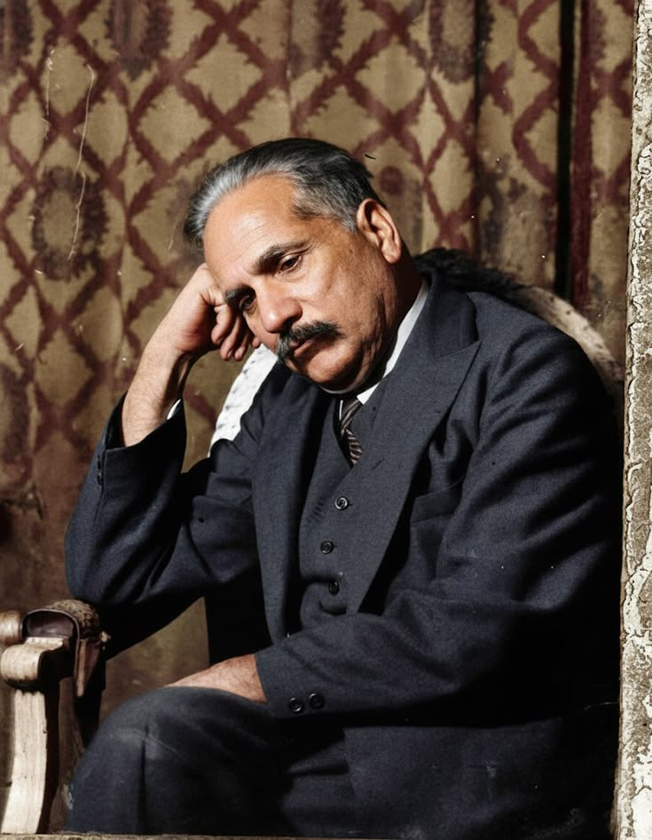
Allama Iqbal
Poet and philosopher.
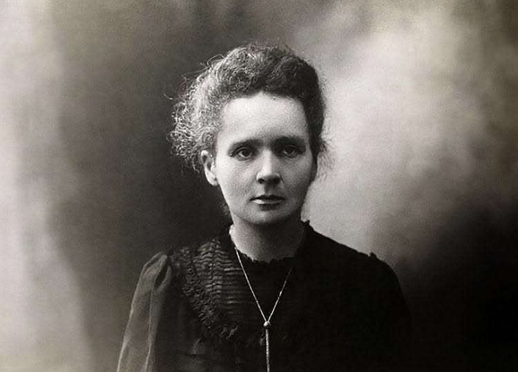
Marie Curie
Physicist and chemist.
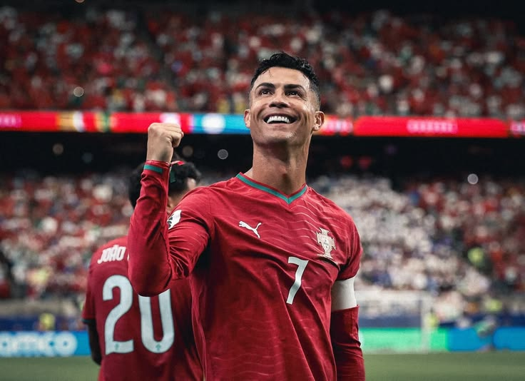
Cristiano Ronaldo
Portuguese football star.
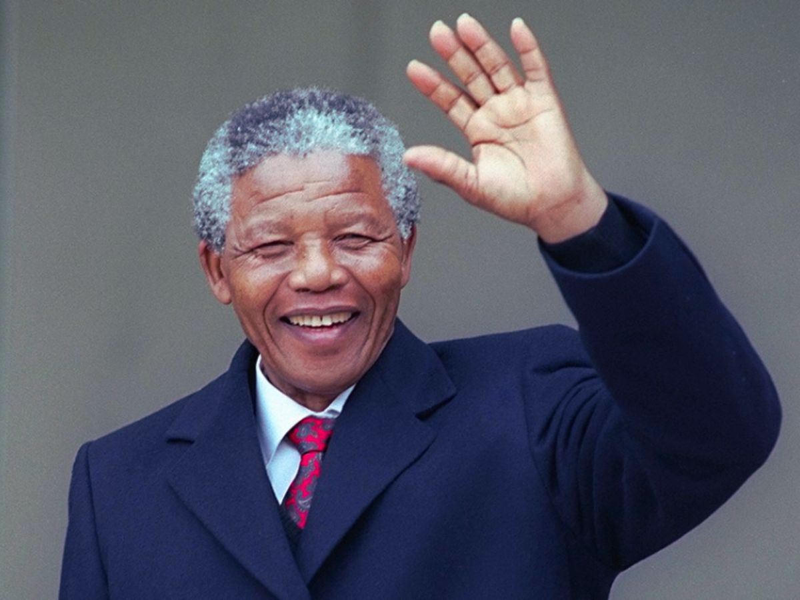
Nelson Mandela
South African freedom leader.
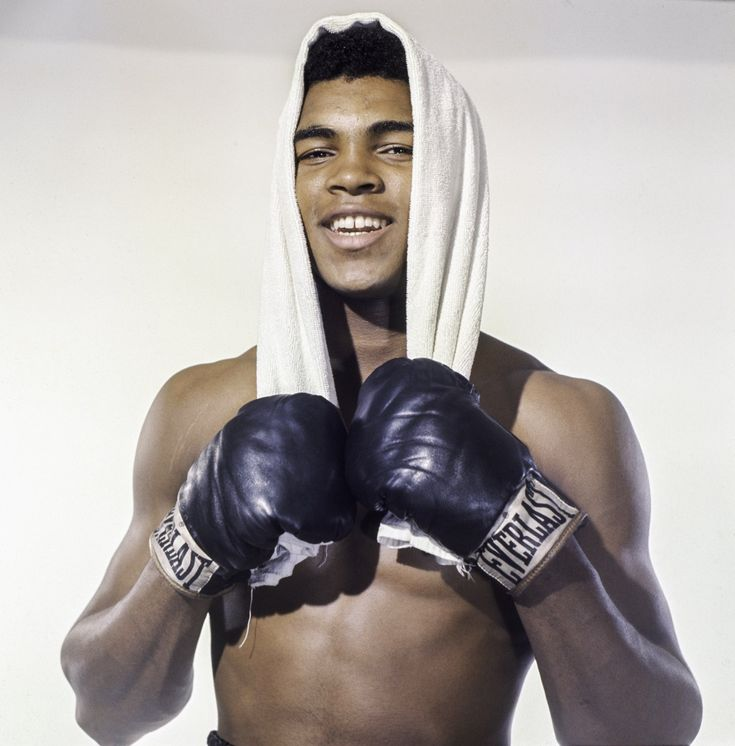
Muhammad Ali
World-famous boxer.
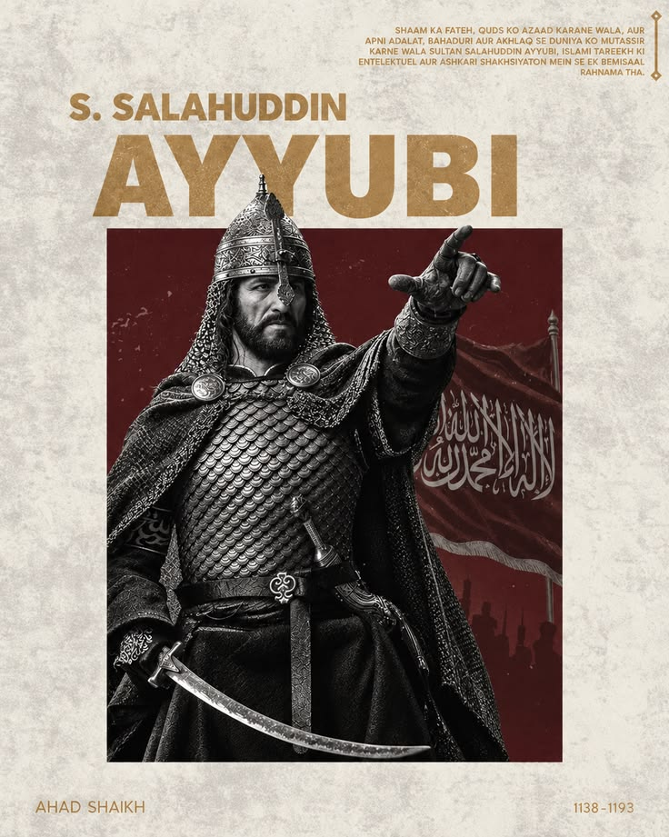
Salahuddin Ayyubi
Medieval Muslim leader.
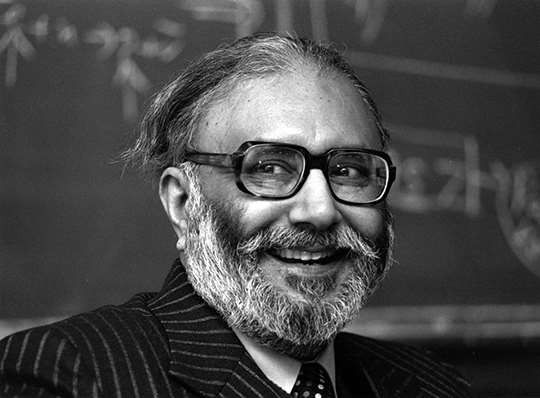
Dr. Abdus Salam
Pakistani Nobel physicist.

Stephen Curry
Basketball star.
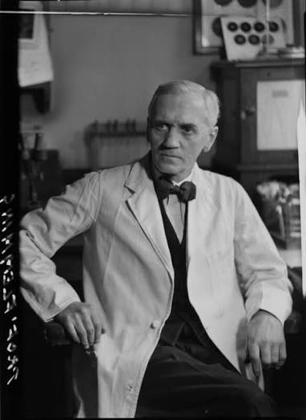
Alexander Fleming
Discoverer of penicillin.
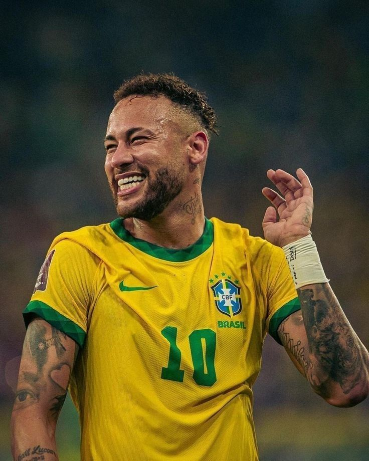
Neymar Jr
Brazilian football star
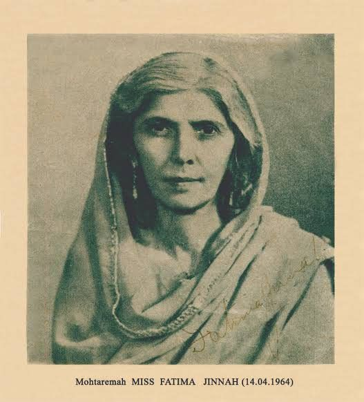
Fatima Jinnah
Mother of the nation
Imran Khan - Biography
Fatima Jinnah was the younger sister of Muhammad Ali Jinnah, the founder of Pakistan, and is known as Madar-e-Millat, “Mother of the Nation”. She was born on 31 July 1893 and died on 9 July 1967. Of Jinnah’s six siblings, she was the closest to him. Most sources place her birth in Karachi, though a few give other locations. Fatima Jinnah +3
Unusually for a Muslim girl of her time, she was sent to school and then to professional training. She qualified as a dentist at Dr. Ahmad Dental College in Calcutta (graduating in 1923) and opened her own clinic in Bombay. After the death of her brother’s wife, Ruttie, in 1929, she moved into his household and helped raise his daughter, Dina. From then on she was his closest companion, and she accompanied him on political tours and during his years in London.
After Pakistan was created in 1947, she stayed close to her brother during the first difficult year, when the new state faced a refugee crisis and a lack of resources. She was with him until his death in September 1948.Imran Khan - Read More
Education and Career
Futsal and street football in São Vicente
Santos FC youth academy (from about age 11)
Santos senior team (2009–2013)
FC Barcelona, Spain (2013–2017)
Paris Saint-Germain, France (2017–2023)
Al Hilal, Saudi Arabia (2023–2025)
Returned to his boyhood club Santos in January 2025
ESPN
Brazil national team (2010–2026)
Career Timelines
Year Milestone
1992 Born in Mogi das Cruzes, Brazil
2009 Senior debut for Santos at 17
2010–12 Wins Campeonato Paulista titles and the Copa do Brasil with Santos
2011 Wins the Copa Libertadores; wins FIFA’s Puskás Award for goal of the year
2013 Wins the FIFA Confederations Cup with Brazil; joins Barcelona
2014–15 Barcelona win La Liga, Copa del Rey and Champions League
2016 Wins Olympic gold for Brazil in Rio
2017 Joins PSG for a world-record fee of €222 million
2020 Reaches the Champions League final with PSG
2022 Equals and then passes Pelé’s Brazil scoring record
2023 Joins Al Hilal; suffers a serious knee injury
2025 Returns to Santos
2026 Plays his fourth World Cup; retires from international football
Struggles
After retiring from cricket, he faced the challenge of establishing a political party and building support over many years. His charitable work also required extensive fundraising and organisation. During his time in politics, he faced strong opposition and controversy over his policies and leadership. His political career remains a subject of public debate in Pakistan. At the 2026 World Cup, muscle injuries limited him to two of Brazil’s five games. Some observers also criticise his temperament and his habit of going down easily, and he has served disciplinary suspensions. A Spanish court case over his 2013 transfer to Barcelona ended with his acquittal.
Key Contributions
Brazil’s top scorer. He is Brazil’s all-time leading scorer with 80 goals, passing Pelé’s total of 77.
ESPN
A member of the “MSN” attack with Lionel Messi and Luis Suárez at Barcelona, one of the most prolific forward lines in football history.
Trophy winner at the highest level. He won the Champions League, domestic league titles in Spain and France, and the Copa Libertadores.
Olympic hero. He captained Brazil to its first Olympic football gold in 2016, scoring the winning penalty in the final against Germany.
Four World Cups. The 2026 tournament was his fourth for Brazil.
Style
He is known for dribbling, flair and creativity, which influenced a generation of young players.
Awards and Honors
FIFA Puskás Award for goal of the year (2011)
South American Footballer of the Year (2011, 2012)
Golden Ball at the FIFA Confederations Cup (2013)
Third in the Ballon d’Or voting (2015)
Olympic gold medal (2016)
Selected for the FIFPro World XI and several league team-of-the-year lists
Brazilian champion with Santos, Spanish champion and Champions League winner with Barcelona, and five-time French champion with PSG (verify exact seasons before publishing)
Selected Works and Mediab
Neymar: The Perfect Chaos (Netflix documentary series, 2022)
Official profiles and match reports on FIFA.com, CBF (Brazilian Football Confederation) and the club sites for Santos, Barcelona and PSG
Legacy
Neymar is widely seen as one of the most gifted forwards of his generation and a symbol of Brazil’s attacking tradition. Debate continues over how many major individual titles he might have won without injuries, which gives your page a balanced view.
Neymar Jr - Biography
Neymar da Silva Santos Júnior was born on 5 February 1992 in Mogi das Cruzes, in São Paulo state, and grew up in the port city of São Vicente near Santos. His father, also named Neymar, was a former footballer who became his first coach and later his agent. His mother is Nadine Santos, and he has a sister, Rafaella. He learned the game on futsal courts and street pitches, which shaped his quick footwork and dribbling.
fotmob He joined the youth system of Santos FC as a boy and made his first-team debut in 2009, aged 17. He has a son, Davi Lucca, born in 2011. Off the pitch he runs the Instituto Projeto Neymar Jr., a charitable project in Praia Grande that supports children and young people through education and sport.
Current status (November 2026): He is captain of Santos, and in late October 2026 he was handed a two-match suspension for his conduct after a red card against Bahia. His Santos contract runs until December 2026. He has said he will see it through and will decide afterwards whether to stay, move on or retire from club football, and he has already confirmed his retirement from international duty.
Imran Khan - Read More
Education and Career
Futsal and street football in São Vicente
Santos FC youth academy (from about age 11)
Santos senior team (2009–2013)
FC Barcelona, Spain (2013–2017)
Paris Saint-Germain, France (2017–2023)
Al Hilal, Saudi Arabia (2023–2025)
Returned to his boyhood club Santos in January 2025
ESPN
Brazil national team (2010–2026)
Career Timelines
Year Milestone
1992 Born in Mogi das Cruzes, Brazil
2009 Senior debut for Santos at 17
2010–12 Wins Campeonato Paulista titles and the Copa do Brasil with Santos
2011 Wins the Copa Libertadores; wins FIFA’s Puskás Award for goal of the year
2013 Wins the FIFA Confederations Cup with Brazil; joins Barcelona
2014–15 Barcelona win La Liga, Copa del Rey and Champions League
2016 Wins Olympic gold for Brazil in Rio
2017 Joins PSG for a world-record fee of €222 million
2020 Reaches the Champions League final with PSG
2022 Equals and then passes Pelé’s Brazil scoring record
2023 Joins Al Hilal; suffers a serious knee injury
2025 Returns to Santos
2026 Plays his fourth World Cup; retires from international football
Struggles
After retiring from cricket, he faced the challenge of establishing a political party and building support over many years. His charitable work also required extensive fundraising and organisation. During his time in politics, he faced strong opposition and controversy over his policies and leadership. His political career remains a subject of public debate in Pakistan. At the 2026 World Cup, muscle injuries limited him to two of Brazil’s five games. Some observers also criticise his temperament and his habit of going down easily, and he has served disciplinary suspensions. A Spanish court case over his 2013 transfer to Barcelona ended with his acquittal.
Key Contributions
Brazil’s top scorer. He is Brazil’s all-time leading scorer with 80 goals, passing Pelé’s total of 77.
ESPN
A member of the “MSN” attack with Lionel Messi and Luis Suárez at Barcelona, one of the most prolific forward lines in football history.
Trophy winner at the highest level. He won the Champions League, domestic league titles in Spain and France, and the Copa Libertadores.
Olympic hero. He captained Brazil to its first Olympic football gold in 2016, scoring the winning penalty in the final against Germany.
Four World Cups. The 2026 tournament was his fourth for Brazil.
Style
He is known for dribbling, flair and creativity, which influenced a generation of young players.
Awards and Honors
FIFA Puskás Award for goal of the year (2011)
South American Footballer of the Year (2011, 2012)
Golden Ball at the FIFA Confederations Cup (2013)
Third in the Ballon d’Or voting (2015)
Olympic gold medal (2016)
Selected for the FIFPro World XI and several league team-of-the-year lists
Brazilian champion with Santos, Spanish champion and Champions League winner with Barcelona, and five-time French champion with PSG (verify exact seasons before publishing)
Selected Works and Mediab
Neymar: The Perfect Chaos (Netflix documentary series, 2022)
Official profiles and match reports on FIFA.com, CBF (Brazilian Football Confederation) and the club sites for Santos, Barcelona and PSG
Legacy
Neymar is widely seen as one of the most gifted forwards of his generation and a symbol of Brazil’s attacking tradition. Debate continues over how many major individual titles he might have won without injuries, which gives your page a balanced view.
Imran Khan - Biography
Imran Ahmed Khan Niazi was born on 5 October 1952 in Lahore, Pakistan. He grew up in a family that valued education and sports. From an early age, he developed a strong interest in cricket and went on to become one of Pakistan's most recognised international cricketers.
He attended Aitchison College in Lahore, continued his education at the Royal Grammar School in Worcester, England, and studied at Keble College, University of Oxford. He made his international cricket debut in 1971 and became captain of Pakistan's national cricket team in the 1980s.
His greatest sporting achievement came in 1992, when he led Pakistan to its first Cricket World Cup victory. After retiring from international cricket, he established a cancer hospital in memory of his mother and entered politics. He founded Pakistan Tehreek-e-Insaf (PTI) in 1996 and served as Pakistan's prime minister from 2018 to 2022.
Imran Khan - Read More
Education and Career
- Aitchison College, Lahore, Pakistan.
- Royal Grammar School, Worcester, England.
- Keble College, University of Oxford.
- Made his Test cricket debut in 1971.
- Became captain of Pakistan's cricket team in the 1980s.
- Led Pakistan to victory in the 1992 Cricket World Cup.
- Founded Shaukat Khanum Memorial Cancer Hospital.
- Founded Pakistan Tehreek-e-Insaf in 1996.
- Served as the 22nd prime minister of Pakistan from 2018 to 2022.
ICC
+1
Career Timelines
Year Milestone
1952 Born in Lahore, Pakistan
1971 Makes his Test cricket debut
1982 Becomes captain of Pakistan's cricket team
1987 Pakistan reaches the Cricket World Cup semi-finals
1992 Leads Pakistan to its first Cricket World Cup title
1994 Shaukat Khanum Memorial Cancer Hospital opens in Lahore
1996 Founds Pakistan Tehreek-e-Insaf
2008 Namal educational project is established
2010 Inducted into the ICC Cricket Hall of Fame
2018 Becomes prime minister of Pakistan
2022 Leaves the office of prime minister
Pakistan Cricket Board (PCB) Official Website +2
Struggles
Imran Khan faced significant challenges throughout his sporting and public career. As a captain, he had to manage the pressure of international competition and build a team capable of competing against established cricketing nations. After retiring from cricket, he faced the challenge of establishing a political party and building support over many years. His charitable work also required extensive fundraising and organisation. During his time in politics, he faced strong opposition and controversy over his policies and leadership. His political career remains a subject of public debate in Pakistan.
Key Contributions
- Led Pakistan to its historic 1992 Cricket World Cup victory.
- Became known for his skills as a fast bowler, batsman and all-rounder.
- Established Shaukat Khanum Memorial Cancer Hospital and Research Centre in Lahore.
- Supported the development of educational opportunities through projects including Namal.
- Founded PTI and participated in Pakistan's electoral and parliamentary politics.
- Helped raise the international profile of Pakistani cricket.
UN Trade and Development (UNCTAD)
+1
Awards and Honors
- ICC Cricket Hall of Fame: Inducted in 2010 according to the ICC's official profile.
- 1992 Cricket World Cup: Winning captain of Pakistan.
- Pride of Performance: Received in 1983.
- Hilal-e-Imtiaz: Received in 1992.
- Recognised internationally for his cricketing career and charitable work.
Selected Books
- Pakistan: A Personal History — Imran Khan.
- Warrior Race: A Jour
Through the Land of the Tribal Pathans — Imran Khan.
- Indus Journey: A Personal View of Pakistan — Imran Khan.
- Imran Khan: The Cricketer, The Celebrity, The Politician — Christopher Sandford.
Legacy
Imran Khan's legacy includes achievements in cricket, charitable work and national politics. His leadership during the 1992 World Cup remains a major moment in Pakistan's sporting history. His cancer hospital project also became an important part of his public life. His political legacy is debated, making it useful to present documented achievements alongside different views of his time in government.
Cristiano Ronaldo - Biography
Cristiano Ronaldo dos Santos Aveiro was born on 5 February 1985 in Funchal, Madeira, Portugal. He grew up in a working-class family and developed a passion for football at a very young age. His father, José Dinis Aveiro, worked as a kit man at a local football club, while his mother, Maria Dolores dos Santos Aveiro, worked as a cook and cleaner.
Ronaldo joined the youth academy of Sporting CP in Lisbon as a teenager. His exceptional speed, dribbling and goal-scoring ability attracted the attention of Manchester United, which signed him in 2003. He later played for Real Madrid, Juventus, Manchester United again, and Al-Nassr in Saudi Arabia. He also became captain of Portugal's national team and helped his country win the UEFA European Championship in 2016.
Cristiano Ronaldo - Read More
Education and Career
- Attended school in Madeira, Portugal, before focusing on professional football.- Joined Sporting CP's youth academy in 1997.
- Made his senior debut for Sporting CP in 2002.
- Joined Manchester United in 2003.
- Played for Real Madrid from 2009 to 2018.
- Played for Juventus from 2018 to 2021.
- Returned to Manchester United in 2021.
- Joined Al-Nassr in 2023.
- Captained Portugal in international competitions.
Carrier Timelines
Year Milestone
1985 Born in Madeira, Portugal
2002 Makes senior debut for Sporting CP
2003 Joins Manchester United
2008 Wins his first Ballon d'Or
2009 Transfers to Real Madrid
2016 Wins UEFA Euro with Portugal
2018 Joins Juventus
2021 Returns to Manchester United
2023 Joins Al-Nassr
2024 Becomes the first men's international footballer to reach 900 official career goals
Struggles
Ronaldo grew up in a family with limited financial resources. Moving away from Madeira at a young age meant living far from his family while pursuing his football career. He also faced intense competition, pressure from supporters and the media, and the challenge of maintaining high performance across many seasons. His career has included difficult defeats and criticism, but he continued training and adapting his game as he grew older. His discipline and commitment to football became major parts of his public image.
Key Contributions
- Helped Portugal win the UEFA European Championship in 2016.
- Won multiple domestic league and European club titles.
- Became Real Madrid's all-time leading goalscorer in official matches.
- Set major scoring records in the UEFA Champions League and men's international football.
- Inspired young footballers through his training, discipline and professional career.
- Supported charitable and humanitarian initiatives.
Awards and Honors
- Ballon d'Or: Five-time winner.
- UEFA European Championship: Winner with Portugal in 2016.
- UEFA Champions League: Five-time winner as a player.
- Multiple league titles in England, Spain and Italy.
- Numerous European Golden Shoe and top-scorer awards.
- Portugal's all-time leading men's international goalscorer.
Selected Books
- Moments — Cristiano Ronaldo.
- Cristiano Ronaldo: The Biography — Guillem Balagué.
- Ronaldo: The Obsession for Perfection — Luca Caioli.
- Cristiano Ronaldo: The Ultimate Fan Book — various editions and authors.
Legacy
Cristiano Ronaldo is widely regarded as one of the most influential footballers of his generation. His goal-scoring records, athletic preparation and performances for both club and country have shaped modern football. His career also demonstrates how dedication, persistence and consistent practice can help an athlete perform at an elite level for many years.
Stephen Curry - Biography
Wardell Stephen Curry II, commonly known as Stephen Curry or Steph Curry, was born on 14 March 1988 in Akron, Ohio, United States. He grew up in a sports-oriented family. His father, Dell Curry, was a professional basketball player, and his younger brother, Seth Curry, also became an NBA player.
Stephen developed his basketball skills while growing up in North Carolina. He attended Charlotte Christian School and later studied at Davidson College. Although he was not initially considered one of the biggest prospects in college basketball, he became famous for his accurate long-distance shooting and excellent ball-handling skills.
In 2009, the Golden State Warriors selected him seventh overall in the NBA Draft. Curry became a central figure in the Warriors' championship teams and helped change modern basketball through his exceptional three-point shooting. He won four NBA championships with the Warriors and two NBA Most Valuable Player awards. He also won an Olympic gold medal with the United States at the 2024 Paris Olympics.
Stephen Curry - Read More
Education and Career
- Charlotte Christian School, North Carolina.
- Davidson College, where he played college basketball.
- Selected seventh overall by the Golden State Warriors in the 2009 NBA Draft.
- Became an NBA All-Star in 2014.
- Won his first NBA championship in 2015.
- Won consecutive NBA MVP awards in 2015 and 2016.
- Won NBA championships with Golden State in 2015, 2017, 2018 and 2022.
- Won the NBA Finals Most Valuable Player award in 2022.
- Won Olympic gold with Team USA in 2024.
Career Timelines
Year Milestone
1988 Born in Akron, Ohio.
2006 Begins playing college basketball at Davidson
2008 Leads Davidson on a memorable NCAA tournament run
2009 Drafted by the Golden State Warriors.
2013 Sets a then-NBA single-season record with 272 three-pointers
2015 Wins his first NBA championship and first MVP award
2016 Wins his second consecutive MVP award
2018 Wins his third NBA championship
2021 Becomes the NBA's career leader in made three-pointers
2022 Wins his fourth NBA title and first Finals MVP
2024 Wins Olympic gold with Team USA
Struggle
Curry faced doubts about his physical size and whether his playing style would succeed against stronger professional players. During his early NBA career, ankle injuries also disrupted his progress and required careful rehabilitation.He responded by improving his strength, conditioning, ball handling and shooting technique. His later success demonstrated how skill development, teamwork and adapting to challenges can be just as important as physical attributes in basketball.
Key Contributions
Helped popularise high-volume three-point shooting in modern basketball.
- Became the NBA's all-time leader in career three-pointers made.
- Led the Golden State Warriors to four NBA championships.
- Won two NBA Most Valuable Player awards.
- Won the 2022 NBA Finals MVP award.
- Won an Olympic gold medal in Paris in 2024.
- Inspired young basketball players to develop shooting accuracy, movement and ball-handling skills.
Awards and Honors
- NBA Champion: Four-time winner.
- NBA Most Valuable Player: Two-time winner.
- NBA Finals Most Valuable Player: 2022.
- NBA All-Star: Multiple selections.b
- Olympic gold medal: 2024, with the United States.
- NBA three-point records: Career leader in made three-pointers, according to the NBA's historical records.
- NBA scoring champion: 2016 and 2021.
Selected Books
- Stephen Curry: The Inspiring Story of One of Basketball's Sharpest Shooters — Clayton Geoffreys.
- The Rise of Stephen Curry — various biographies and sports publications.
- Stephen Curry: The Children's Book — various editions and authors.
Legacy
Stephen Curry is widely recognised as one of the most influential shooters in basketball history. His ability to score from long range helped change how teams approach offensive strategy. His career illustrates the importance of practice, creativity, resilience and confidence in developing sporting excellence.
Muhammad Ali - Biography
Muhammad Ali was born Cassius Marcellus Clay Jr. on 17 January 1942 in Louisville, Kentucky, United States. He became interested in boxing as a young teenager after his bicycle was stolen and he told a police officer that he wanted to learn how to fight. The officer encouraged him to train in boxing.
Ali developed exceptional speed, footwork and confidence in the ring. He won a gold medal in the light heavyweight division at the 1960 Rome Olympics and became a professional boxer later that year. In 1964, he defeated Sonny Liston to become the world heavyweight champion.
After embracing Islam, he adopted the name Muhammad Ali. He became famous not only for his boxing achievements but also for speaking openly about racial equality, religious beliefs and social issues. His professional career included several historic fights, and he became one of the most recognisable sporting figures of the twentieth century. He died on 3 June 2016 in Scottsdale, Arizona.
Muhammad Ali - Read More
Education and Career
- Attended Central High School in Louisville, Kentucky.
- Began amateur boxing as a teenager.
- Won a gold medal at the 1960 Rome Olympics.
- Turned professional in 1960.
- Defeated Sonny Liston to win the heavyweight championship in 1964.
- Adopted the name Muhammad Ali in 1964.
- Returned to boxing after a period away from the ring in the late 1960s and early 1970s.
- Fought George Foreman in the famous 1974 Rumble in the Jungle.
- Retired from professional boxing in 1981.
- Became known for humanitarian work and international advocacy.
Career Timelines
Year Milestone
1942 Born in Louisville, Kentucky
1954 Begins boxing training as a teenager
1960 Wins Olympic gold in Rome
1960 Begins his professional boxing career
1964 Defeats Sonny Liston to become heavyweight champion
1967 Refuses military induction on religious grounds and is barred from boxing
1971 The US Supreme Court overturns his conviction
1974 Defeats George Foreman in the Rumble in the Jungle
1975 Wins the famous fight against Joe Frazier known as the Thrilla in Manila
1978 Wins the heavyweight championship for a third time
1981 Retires from professional boxing
2005 Receives the Presidential Medal of Freedom
2016 Dies in Arizona, United States
Struggle
Ali faced major challenges both inside and outside the boxing ring. In 1967, he refused induction into the US military, explaining that his religious beliefs opposed participation in the Vietnam War. He was convicted, stripped of his heavyweight title and prevented from boxing professionally during a significant period of his career. The US Supreme Court overturned his conviction in 1971. He also faced difficult defeats against other leading boxers and the physical demands of a long professional career. In later life, he lived with Parkinson's syndrome, which affected his movement and speech. Despite these challenges, he continued to participate in charitable and humanitarian activities.
Key Contributions
- Won Olympic gold in boxing at the 1960 Rome Olympics.
- Became the first boxer to win the world heavyweight championship three times.
- Participated in landmark fights, including the Rumble in the Jungle and the Thrilla in Manila.
- Became a prominent public voice on racial equality, religion and personal freedom.
- Supported humanitarian causes and international peace initiatives.
- Inspired generations of athletes through his confidence, footwork, speed and determination.
Awards and Honors
- Olympic gold medal: 1960 Rome Olympics.
- World heavyweight champion: Won the title three times during his career.
- Presidential Medal of Freedom: Awarded in 2005.
- Sports Illustrated Sportsman of the Century: Named in 1999.
- BBC Sports Personality of the Century: Recognised in 1999.
- Widely honoured for his sporting achievements and humanitarian work.
Selected Books
- The Greatest: My Own Story — Muhammad Ali with Richard Durham.
- The Soul of a Butterfly: Reflections on Life's Journey — Muhammad Ali and Hana Yasmeen Ali.
- Muhammad Ali: His Life and Times — Thomas Hauser.
- King of the World — David Remnick.
Legacy
Muhammad Ali is remembered as one of the greatest heavyweight boxers in history. His combination of speed, technique, confidence and tactical ability changed expectations of heavyweight boxing. Beyond sports, he became a global cultural figure whose public stands on religion, race and freedom continue to be discussed. His life demonstrates the influence an athlete can have beyond the boundaries of competition.
Quaid-e-Azam - Biography
Muhammad Ali Jinnah was born on 25 December 1876 in Karachi, in what was then British India. His father, Jinnahbhai Poonja, was a successful merchant, and his mother was Mithibai. He was the eldest of seven children. His early schooling was in Karachi, including the Sindh Madrasatul Islam and the Christian Missionary Society High School.
At 16 he travelled to London to join a trading firm, but he decided to study law instead and joined Lincoln’s Inn in 1893. He was called to the bar in 1896 at 19, among the youngest Indians to do so at the time. He returned to India and began practising law in Bombay. He quickly became one of the most successful and respected barristers in the country, known for his sharp arguments, discipline and incorruptible character.
In 1918 he married Rattanbai (Ruttie) Petit, and they had a daughter, Dina. Ruttie died in 1929. His sister Fatima Jinnah was his closest companion in his later years and a political figure in her own right.
Quaid-e-Azam - Read More
Founder of Pakistan · First Governor-General of Pakistan
Education and Career
Sindh Madrasatul Islam and Christian Missionary Society High School, Karachi
Lincoln’s Inn, London: called to the bar (1896)
Barrister in Bombay, with a very successful practice
Member of the Imperial Legislative Council (1910 onwards)
Joined the Indian National Congress (1906) and the All-India Muslim League (1913)
President of the Muslim League and leader of the Pakistan Movement
First Governor-General of Pakistan (1947–48)
Career Timeline
Year Milestone
1876 Born in Karachi
1896 Called to the bar, begins practice in Bombay
1906 Joins the Indian National Congress
1913 Joins the All-India Muslim League
1916 Lucknow Pact between the Congress and the League
1929 Presents his Fourteen Points
1934 Returns from London and takes up the leadership of the Muslim League
1940 Lahore Resolution (23 March)
1947 Pakistan is created (14 August); becomes Governor-General
1948 Dies in Karachi (11 September)
Struggles
Jinnah began his political life working for Hindu–Muslim unity, and was once called its “ambassador”. Over time, disagreements with the Congress led by Gandhi and Nehru, and the growing mistrust between communities, led him to believe that Muslims needed constitutional guarantees and, later, a separate homeland. In the 1937 provincial elections the Muslim League performed poorly, and he spent the following years rebuilding the party into a mass movement. He campaigned against both British resistance and Congress opposition.
He also struggled with his health. He suffered from tuberculosis and lung disease for years and hid it from nearly everyone, fearing it would weaken his movement. After independence he faced enormous challenges, including millions of refugees, the lack of a capital and administration, the division of assets and the conflict over Kashmir. He died just over a year after Pakistan was created.
Key Contributions
Led the political struggle that resulted in the creation of Pakistan in 1947
Presented the Fourteen Points (1929) to protect Muslim political rights
Supported the Lahore Resolution (1940), which became the foundation of the Pakistan demand
Won a decisive electoral mandate for the Muslim League in the 1945–46 elections
As Governor-General, laid the foundations of the new state, stressing unity, faith and discipline, and equal rights for minorities (see his address of 11 August 1947)
Awards and Honors
Quaid-e-Azam (“Great Leader”) and Baba-e-Qaum (“Father of the Nation”)
First Governor-General of Pakistan
His portrait appears on Pakistani banknotes
Mazar-e-Quaid, his mausoleum in Karachi, is a national monument
Quaid-e-Azam International Airport and many institutions named after him
Quaid-e-Azam Day is observed on 25 December
Selected Works and Books
Speeches and Statements as Governor-General of Pakistan, 1947–48
Jinnah: Creator of Pakistan by Hector Bolitho (1954)
My Brother by Fatima Jinnah
Jinnah of Pakistan by Stanley Wolpert (1984)
The Sole Spokesman by Ayesha Jalal (1985)
Legacy
Jinnah created a state of more than 200 million people today. His emphasis on “Unity, Faith, Discipline” remains the national motto. Historians continue to debate his politics, such as how he used the idea of Pakistan, which is why it helps to read several authors.
Allama Iqbal - Biography
Muhammad Iqbal was born on 9 November 1877 in Sialkot, Punjab. His father, Sheikh Noor Muhammad, was a deeply religious man. His family traced its roots to Kashmiri Brahmins who had converted to Islam. Iqbal’s teacher at Scotch Mission College, Maulvi Syed Mir Hassan, recognised his talent early and shaped his love for Persian, Arabic and Islamic thought.
He went to Government College Lahore, where he completed an MA in philosophy (1899) and was taught by the British scholar Sir Thomas Arnold. In 1905 he went to Europe, studied at Trinity College, Cambridge, trained as a barrister at Lincoln’s Inn, and earned a doctorate in philosophy from the University of Munich in 1908. His thesis was The Development of Metaphysics in Persia.
Back in Lahore he practised law, taught, and wrote poetry. He was knighted in 1923, though he had long criticised colonial rule. He was married more than once and had children, including a son, Javid Iqbal, for whom his famous poem Javid Nama is named. He died in Lahore on 21 April 1938.
Allama Iqbal - Read More
Poet of the East · Philosopher · Thinker behind the idea of Pakistan
Education and Career
Scotch Mission College, Sialkot
Government College Lahore: MA in Philosophy (1899)
Trinity College, Cambridge (1905–1906); Lincoln’s Inn, London (barrister, 1908)
PhD, University of Munich (1908)
Lecturer in philosophy and Arabic, then lawyer in Lahore
Member of the Punjab Legislative Council (1927)
President of the Muslim League’s Allahabad session (1930)
Career Timeline
Year Milestone
1877 Born in Sialkot
1899 MA in Philosophy, Lahore
1905–08 Studies in Cambridge, London and Munich
1915 Publishes Asrar-e-Khudi
1923 Knighted
1924 Publishes Bang-e-Dra
1930 Allahabad Address, proposing a Muslim state in north-west India
1930–32 Delivers lectures that become The Reconstruction of Religious Thought in Islam
1938 Dies in Lahore
Struggles
Iqbal had to balance a legal career with poetry and scholarship. In his later years he suffered from poor health, including eye trouble, the loss of his voice and kidney illness, which restricted his work. Colonial rule, the weakness of Muslim societies and political divisions troubled him deeply, and he channelled that concern into his writing. His call for self-awareness and action inspired millions, but he also faced criticism from rival religious and political groups.
Key Contributions
Poetry in Urdu and Persian. His work awakened a sense of self-respect and purpose (“Khudi”) among Muslims of the subcontinent.
Philosophy. He argued that Islamic thought should be dynamic and open to reinterpretation (ijtihad) in the modern world.
The Allahabad Address (1930). He proposed the consolidation of Punjab, the North-West Frontier, Sindh and Balochistan into a single Muslim state within or alongside India. This vision inspired the Pakistan Movement.
Mentor to Jinnah. He wrote letters urging Jinnah to return and lead the Muslim League.
Awards and Honors
Shair-e-Mashriq (“Poet of the East”), Hakeem-ul-Ummat and Mufakkir-e-Pakistan (“Thinker of Pakistan”)
Honoured as the National Poet of Pakistan
Knighted in 1923
His mausoleum stands beside the Badshahi Mosque in Lahore
Allama Iqbal International Airport (Lahore) and Allama Iqbal Open University are named after him
Iqbal Day is observed on 9 November
Selected Works and Books
Poetry
Asrar-e-Khudi (1915) and Rumuz-e-Bekhudi (1918)
Payam-e-Mashriq (1923)
Bang-e-Dra (1924)
Zabur-e-Ajam (1927)
Javid Nama (1932)
Bal-e-Jibril (1935)
Zarb-e-Kaleem (1936)
Armaghan-e-Hijaz (1938, posthumous)
Prose
The Reconstruction of Religious Thought in Islam (1930), English lectures
Ilm-ul-Iqtisad (1903), an early Urdu economics book
Legacy
Iqbal’s poetry is memorised in schools and quoted at national occasions across Pakistan and beyond, and he is respected in Iran, Turkey and Central Asia for his Persian works. His ideas on self-development remain widely studied.
Salahuddin Ayyubi - Biography
Salah ad-Din Yusuf ibn Ayyub was born around 1137 in Tikrit, in present-day Iraq, to a Kurdish family. His father, Najm ad-Din Ayyub, served the Zengid rulers, and his uncle Shirkuh became a leading military commander under Nur ad-Din Zengi. The family moved to Baalbek and Damascus, where Salahuddin received a strong education in the Quran, Islamic law, history and horsemanship, and a reputation for piety and modesty.
His fortunes changed in the 1160s, when he joined his uncle’s military expeditions to Egypt, then ruled by the weakened Fatimid caliphate. After Shirkuh died in 1169, Salahuddin became vizier of Egypt at about 31. He abolished the Fatimid caliphate in 1171 and returned Egypt to Sunni authority. After Nur ad-Din died in 1174, Salahuddin spent years uniting Egypt, Syria and parts of Mesopotamia under his rule.
He died in Damascus on 4 March 1193 and was buried beside the Umayyad Mosque. Contemporary accounts say that he left little wealth, because he had given most of it away.
Salahuddin Ayyubi - Read More
Sultan of Egypt and Syria · Founder of the Ayyubid Dynasty · Liberator of Jerusalem
Education and Career
Raised and educated in Baalbek and Damascus
Military training under his uncle Shirkuh in the service of Nur ad-Din
Vizier of Egypt (1169)
Sultan of Egypt (1174)
Unified Syria and large parts of Upper Mesopotamia under his rule
Led the Muslim campaign against the Crusader states (1187–1192)
Career Timeline
Year Milestone
c. 1137 Born in Tikrit
1164–69 Joins campaigns in Egypt
1169 Becomes vizier of Egypt
1171 Ends the Fatimid caliphate
1174 Sultan of Egypt; begins uniting Syria
1187 Wins the Battle of Hattin (4 July); recaptures Jerusalem (2 October)
1189–91 Siege of Acre during the Third Crusade
1192 Treaty of Ramla with Richard the Lionheart
1193 Dies in Damascus
Struggles
For the first part of his career Salahuddin had to deal with rivals within the Muslim world. Many Zengid princes and local rulers resisted his rise, and he spent years in negotiation and warfare to unify them. He also suffered setbacks, including a heavy defeat at Montgisard in 1177. His final years were taken up by the Third Crusade, led by Richard I of England, Philip II of France and Frederick Barbarossa. He could not retake Acre, and the coastal campaigns ended in a stalemate. Years of campaigning damaged his health.
Key Contributions
Unified the Muslim lands of Egypt, Syria and parts of Iraq and Yemen into one strong state
The Battle of Hattin (1187). He defeated the Crusader army near the Sea of Galilee, which opened the way to Jerusalem.
The recapture of Jerusalem (1187). After about 88 years of Crusader rule, the city surrendered. Accounts say he allowed residents to leave in return for ransom, and that the city was taken with relatively little bloodshed.
The Treaty of Ramla (1192). It left the coast with the Crusaders but guaranteed Christian pilgrims access to Jerusalem.
Strengthened Cairo’s defences, including the Citadel of Cairo, and supported schools, hospitals and learning
Awards and Honors
Sultan of Egypt and Syria (al-Malik an-Nasir Salah ad-Din)
Founder of the Ayyubid dynasty
Admired even by his opponents for his generosity and chivalry, and a figure of respect in medieval European literature
The Citadel of Cairo, a statue in Damascus and the Salah ad-Din Governorate in Iraq honour his name
Selected Works and Books
The Life of Saladin (al-Nawadir al-Sultaniyya) by Baha ad-Din ibn Shaddad, his companion and judge
al-Fath al-Qussi fi al-Fath al-Qudsi by Imad ad-Din al-Isfahani, his secretary
The Crusades Through Arab Eyes by Amin Maalouf (1983)
Saladin: The Politics of the Holy War by Malcolm Cameron Lyons and D.E.P. Jackson (1982)
Saladin by Anne-Marie Eddé (2008)
Legacy
Salahuddin remains a symbol of unity, justice and mercy in the Muslim world, and he is also respected in the West. His dynasty ruled Egypt and Syria for decades after his death.
Nelson Mandela - Biography
Nelson Rolihlahla Mandela was born on 18 July 1918 in Mvezo, a small village in the Transkei region, into the Thembu royal family. His birth name, Rolihlahla, is often translated as “troublemaker”. The name “Nelson” was given to him by a schoolteacher at his primary school, a common colonial-era practice. His father, a chief and counsellor to the Thembu king, died when Mandela was a boy, and the regent, Chief Jongintaba, became his guardian.
He studied at Clarkebury Boarding Institute and Healdtown Wesleyan College, then entered the University College of Fort Hare. He was expelled after joining a student protest. When the regent arranged a marriage for him, he ran away to Johannesburg. He worked as a mine guard, then as a clerk at a law firm, completing his degree through correspondence and studying law at the University of the Witwatersrand. He later completed his law degree by distance learning with the University of London while in prison.
He married three times: Evelyn Mase (1944), Winnie Madikizela-Mandela (1958, divorced 1996) and Graça Machel (1998). He had six children. In 1969 he was refused permission to attend the funeral of his eldest son, Thembekile. He died on 5 December 2013 at the age of 95.
Nelson Mandela - Read More
Anti-apartheid leader · Nobel Peace Prize (1993) · First democratically elected President of South Africa
Education and Career
Clarkebury Boarding Institute and Healdtown College, Eastern Cape
University College of Fort Hare (left in 1940)
BA through the University of South Africa (1942); law studies at Wits
LLB, University of London (external programme, completed in prison)
Opened South Africa’s first Black-owned law firm, Mandela & Tambo, with Oliver Tambo (1952)
Joined the African National Congress (ANC) in 1944 and co-founded its Youth League
Co-founded Umkhonto we Sizwe (1961), the ANC’s armed wing
President of South Africa (1994–1999)
Career Timeline
Year Milestone
1918 Born in Mvezo, Transkei
1944 Joins the ANC; co-founds the ANC Youth League
1948 The National Party introduces official apartheid
1952 Leads the Defiance Campaign; opens a law firm with Oliver Tambo
1956–61 Treason Trial, ending in acquittal
1961 Co-founds Umkhonto we Sizwe
1962 Arrested
1964 Rivonia Trial; sentenced to life imprisonment
1964–82 Imprisoned on Robben Island
1990 Released on 11 February
1993 Nobel Peace Prize (shared with F. W. de Klerk)
1994 Elected President after South Africa’s first multiracial elections
1999 Steps down after one term
2013 Dies in Johannesburg
Struggles
Apartheid, the system of racial segregation, was formally introduced in 1948, and Mandela spent his adult life challenging it, first through peaceful protests and legal action. After the 1960 Sharpeville massacre, when police killed protesters, the ANC was banned. Mandela concluded that peaceful resistance alone could not end apartheid and helped to found an armed wing focused on sabotage.
After the landmark Rivonia Trial in 1964, he gave a famous speech declaring that he was prepared to die for his ideal of a free and democratic society, and he was sentenced to life imprisonment. He spent twenty-seven years in prison, eighteen of them on Robben Island. Cells were tiny, prisoners did hard labour in a limestone quarry, and visits and letters were strictly limited. He was later moved to Pollsmoor Prison (1982) and then to Victor Verster Prison (1988).
Some governments labelled him a terrorist because of the armed struggle. His own family life suffered, with long separations from his wife and children.
Key Contributions
Leader of the anti-apartheid movement. He became the global symbol of the struggle against racial oppression, and international pressure and sanctions eventually forced change.
Negotiated a peaceful transition. After his release on 11 February 1990, he negotiated with President F. W. de Klerk the transition to democracy.
First democratically elected President. In the first multiracial elections on 27 April 1994, he was elected president with 62% of the vote.
Reconciliation. He set up the Truth and Reconciliation Commission, chaired by Archbishop Desmond Tutu, and encouraged unity, famously supporting the national rugby team at the 1995 World Cup.
A new constitution. His government oversaw the 1996 constitution, which guaranteed equal rights.
Peaceful exit. He stepped down in 1999 after one term, keeping his pledge to strengthen democracy.
After leaving office he worked on peace-making, education and the fight against HIV/AIDS through his foundations, and in 2007 helped create The Elders.
Awards and Honors
Nobel Peace Prize (1993), shared with F. W. de Klerk for their joint efforts to end apartheid peacefully
Sakharov Prize for Freedom of Thought (1988)
Bharat Ratna, India’s highest civilian honour (1990)
Nishan-e-Pakistan, Pakistan’s highest civilian honour (1992)
US Congressional Gold Medal (1998) and Presidential Medal of Freedom (2002)
Hundreds of other awards and honorary degrees from around the world
Nelson Mandela International Day is observed on 18 July, designated by the United Nations in 2009
The UN’s “Nelson Mandela Rules” on the treatment of prisoners were adopted in 2015
Selected Works and Books
No Easy Walk to Freedom (1965), speeches and writings
Long Walk to Freedom (1994), his autobiography
Nelson Mandela’s Favorite African Folktales (2002, editor)
Conversations with Myself (2010)
The Prison Letters of Nelson Mandela (2018)
Biographies: Mandela: The Authorised Biography by Anthony Sampson (1999); Mandela: A Critical Life by Tom Lodge (2006); Mandela’s Way by Richard Stengel (2010)
Legacy
Mandela is widely regarded as one of the twentieth century’s great moral and political leaders. He showed that forgiveness and negotiation can bring change after decades of conflict. South Africa still faces serious challenges, including inequality, unemployment and crime, and historians continue to debate how fully the post-apartheid economic promises were met. Adding this to your page will give a more balanced picture.
Albert Einstein - Biography
Albert Einstein was born on 14 March 1879 in Ulm, in the German Empire, and grew up in Munich. His father ran an electrical business, and his mother, Pauline, was a gifted pianist who encouraged his love of music. A famous story says he was late learning to speak. He was curious from the start, and he later said that a compass given to him as a child sparked his wonder about invisible forces.
He disliked the rigid discipline of German schools and left at 15. After failing the non-science sections of the entrance exam to ETH Zurich, he completed secondary school in Aarau, Switzerland, and entered ETH in 1896. He graduated in 1900 and became a Swiss citizen in 1901.
He married Mileva Marić, a fellow physics student, in 1903, and they divorced in 1919. He then married his cousin Elsa, who died in 1936. In 1933 he left Germany as the Nazis rose to power, and he spent the rest of his life at the Institute for Advanced Study in Princeton, New Jersey. He became a US citizen in 1940.
Albert Einstein - Read More
Theoretical Physicist · Nobel Prize in Physics (1921)
Education and Career
Luitpold Gymnasium, Munich; Cantonal School, Aarau
ETH Zurich, diploma (1900)
PhD, University of Zurich (1905)
Patent examiner, Bern (1902–1909)
Professor at Zurich, Prague and Berlin
Institute for Advanced Study, Princeton (1933 until his death)
Career Timeline
Year Milestone
1879 Born in Ulm, Germany
1900 Graduates from ETH Zurich
1902 Works at the Bern patent office
1905 “Miracle year”: four groundbreaking papers
1915 Completes general relativity
1919 Eclipse observations confirm his light-bending prediction; he becomes world-famous
1921 Nobel Prize in Physics
1933 Moves to the USA
1955 Dies in Princeton
Struggles
Einstein was a rebellious student who clashed with rigid teachers, and after graduating he struggled for two years to find a job, finally taking a patent-office position. His early papers did not earn immediate recognition. In Germany he became a target of antisemitic campaigns and was forced into exile in 1933. For the last three decades of his life he searched for a unified field theory and did not find it. He also stood apart from many colleagues in his discomfort with quantum mechanics’ probabilistic nature, summed up in his long debates with Niels Bohr.
Research
In 1905, while working at the patent office, Einstein published four papers that changed physics:
The photoelectric effect. Light behaves as discrete packets of energy (quanta). This is the work for which he won the Nobel Prize.
Brownian motion. He explained the random movement of tiny particles in a fluid, giving strong evidence that atoms and molecules exist.
Special relativity. He showed that space and time depend on the observer’s motion and that the speed of light is constant.
Mass-energy equivalence. The famous relation E = mc².
In 1915 he completed general relativity, which describes gravity as the curvature of space and time. It predicted the bending of light, gravitational waves and black holes, all later confirmed.
Awards and Honors
Nobel Prize in Physics, 1921, “for his services to Theoretical Physics, and especially for his discovery of the law of the photoelectric effect” (formally awarded in 1922)
Barnard Medal (1920), Matteucci Medal (1921), Copley Medal (1925), Gold Medal of the Royal Astronomical Society (1926), Max Planck Medal (1929), Franklin Medal (1935)
Time magazine’s “Person of the Century” (1999)
In 1952 he was offered the presidency of Israel, and he declined
Selected Works and Books
Relativity: The Special and General Theory (1916)
The Meaning of Relativity (1922)
The Evolution of Physics (1938, with Leopold Infeld)
Why Socialism? (1949, essay)
Ideas and Opinions and The World as I See It (collections of essays)
Legacy
Einstein’s theories underpin modern cosmology, GPS timing corrections, nuclear physics and the study of black holes. He was also an outspoken advocate for peace, civil rights and education. Days before his death in 1955 he signed the Russell–Einstein Manifesto, warning about the dangers of nuclear weapons.
Marie Curie - Biography
Marie Curie was born Maria Salomea Skłodowska on 7 November 1867 in Warsaw, which was then under Russian rule. She was the youngest of five children in a family of teachers who valued education deeply, even though they were poor and politically suppressed. Her mother died of tuberculosis when Marie was young, and her eldest sister died of typhus, losses that shaped her serious, determined character.
Women could not attend university in Russian-controlled Poland, so Marie joined the clandestine “Flying University”, a secret network of classes taught in private homes. She worked as a governess to fund her older sister’s medical studies in Paris, with the understanding that her sister would later help her in return. In 1891 she moved to Paris and enrolled at the Sorbonne, where she lived in a tiny attic room. She sometimes went hungry and fainted from poor diet, but she graduated first in physics (1893) and second in mathematics (1894).
In 1894 she met the physicist Pierre Curie, and they married in 1895. Their partnership became one of the most productive in the history of science. They had two daughters, Irène (who won the Nobel Prize in Chemistry in 1935) and Ève, who later wrote her mother’s best-known biography.
Marie Curie - Read More
Pioneer of Radioactivity · Nobel Prize in Physics (1903) and Chemistry (1911)
Education and Career
Secret “Flying University” in Warsaw (1880s)
University of Paris (Sorbonne): physics degree (1893), mathematics degree (1894)
Doctorate in physics (1903), on radioactive substances
Became the first woman professor at the Sorbonne (1906) after Pierre’s death
Founded the Radium Institute in Paris (1914) and an institute in Warsaw (1932)
Career Timeline
Year Milestone
1867 Born in Warsaw
1891 Moves to Paris to study at the Sorbonne
1895 Marries Pierre Curie
1898 Discovers polonium and radium
1903 Doctorate, then Nobel Prize in Physics (shared)
1906 Pierre dies; she becomes professor at the Sorbonne
1911 Nobel Prize in Chemistry
1914–18 Builds mobile X-ray units in WWI
1934 Dies of aplastic anaemia
Struggles
Marie faced poverty, a lack of access to education for women, and the sexism of the scientific establishment. For years she and Pierre worked in a leaking, converted shed, processing tonnes of pitchblende by hand to isolate tiny amounts of radium. In 1906 Pierre was killed in a street accident, leaving her to raise two daughters alone while continuing their work. In 1911 the press attacked her over a private relationship, and a Nobel committee member suggested she should not come to Stockholm. She went anyway and accepted her second prize. Years of handling radioactive materials without protection eventually damaged her health.
Research
The Curies studied the mysterious rays discovered by Henri Becquerel in uranium. Marie realised that the radiation came from the atoms themselves, an insight that helped open the door to atomic physics. She coined the word “radioactivity”. After finding that the uranium ore pitchblende was far more radioactive than its uranium content explained, she and Pierre concluded that it contained new elements. In 1898 they announced polonium (named after her homeland, Poland) and radium. Marie then spent years purifying radium chloride and measuring its atomic weight, which proved the element was real.
During World War I she developed small X-ray vehicles, known as “Little Curies”, and trained women to operate them. They helped surgeons locate bullets and shrapnel in wounded soldiers.
Awards and Honors
Nobel Prize in Physics, 1903, shared with Pierre Curie and Henri Becquerel, for research on radiation phenomena
Nobel Prize in Chemistry, 1911, awarded to her alone, for discovering polonium and radium and isolating radium
First woman to win a Nobel Prize, and the first person to win in two scientific fields
Davy Medal (1903), Matteucci Medal (1904), Elliott Cresson Medal (1909), Willard Gibbs Award (1921)
Element curium (96) and the unit curie are named in honour of the Curies
Reburied in the Panthéon, Paris, in 1995, the first woman honoured there for her own achievements
Selected Works and Books
Radioactive Substances (1903), her doctoral thesis
Traité de radioactivité (1910)
La Radiologie et la guerre (1921)
Pierre Curie (1923), a biography of her husband
Madame Curie (1937), a biography by Ève Curie
Legacy
Curie’s work led to advances in cancer treatment, medical imaging, nuclear physics and chemistry. She also became a lasting symbol of what women can achieve in science. Her own notebooks remain radioactive today and are kept in lead-lined storage.
Dr. Abdus Salam - Biography
Mohammad Abdus Salam was born on 29 January 1926 in Santokdas, in the Jhang district of Punjab, then part of British India. His father worked in the education department, and the family valued learning. Salam was a brilliant student, and at about the age of 14 he scored the highest marks in the history of the University of the Punjab’s matriculation examination.
He studied at Government College Lahore and completed a master’s degree in mathematics in 1946. A scholarship took him to St John’s College, Cambridge, where he completed degrees in mathematics and physics, and then a PhD in theoretical physics (1952) in the field of quantum electrodynamics.
Salam returned to Pakistan in 1951 to teach, but found little support for advanced research, so he moved back to Cambridge in 1954. In 1957, at just 31, he became Professor of Theoretical Physics at Imperial College London. He also served as Chief Scientific Adviser to the President of Pakistan and helped build the country’s atomic and space research bodies. He died on 21 November 1996 in Oxford, England, and is buried in Rabwah, Pakistan.
Dr. Abdus Salam - Read More
Theoretical Physicist · Nobel Prize in Physics (1979)
Education and Career
Government College Lahore, MA in Mathematics (1946)
St John’s College, Cambridge: BA (1949), PhD (1952)
Lecturer, Government College Lahore and the University of the Punjab (1951–54)
Professor, Imperial College London (1957–1993)
Founder and director, International Centre for Theoretical Physics (ICTP), Trieste, Italy (1964–1993)
Chief Scientific Adviser to the President of Pakistan (1961–1974)
Career Timeline
Year Milestone
1926 Born in Punjab, British India
1946 Master’s in Mathematics, Lahore
1952 PhD, Cambridge
1957 Professor at Imperial College London
1961 Becomes science adviser to Pakistan’s President
1964 Founds ICTP, Trieste
1974 Leaves his official role in Pakistan
1979 Nobel Prize in Physics
1996 Dies in Oxford
Struggles
Salam worked in a country with very few research facilities at a time when top-level physics was done abroad. Frustrated at the lack of opportunities in Pakistan, he left in 1954, and he spent much of his later life trying to help scientists in developing countries who faced the same barriers. In 1974 Pakistan’s parliament declared the Ahmadi community, to which he belonged, to be non-Muslim, and he left his government position in protest. Official recognition of his Nobel Prize in Pakistan remained difficult for many years.
Research
Physics knows four fundamental forces. Salam, along with Sheldon Glashow and Steven Weinberg, developed a theory showing that two of them, the electromagnetic force and the weak nuclear force, are different aspects of a single electroweak force. The theory predicted new particles (the W and Z bosons) and a new kind of interaction called “weak neutral currents”. Neutral currents were observed at CERN in 1973, and the W and Z particles were discovered there in 1983. This was a major step towards the dream of a “theory of everything”.
Awards and Honors
Nobel Prize in Physics, 1979, shared with Sheldon Glashow and Steven Weinberg, for the unified theory of weak and electromagnetic interactions
The first Pakistani Nobel laureate and the first Muslim to win a Nobel Prize in science
Adams Prize (1958), Fellow of the Royal Society (1959), Hughes Medal (1964), Atoms for Peace Prize (1968), Royal Medal (1978), Lomonosov Gold Medal (1983), Copley Medal (1990)
Pakistani honors: Pride of Performance (1959), Sitara-e-Pakistan, Nishan-e-Imtiaz (1979)
Selected Works and Books
Ideals and Realities (1984), essays on science and development
Unification of Fundamental Forces (1990)
Renaissance of Sciences in Islamic Countries (1994)
Nobel lecture: “Gauge Unification of Fundamental Forces” (1979)
Legacy
Through ICTP, Salam gave thousands of scientists from developing nations access to world-class training and research. He argued that science and technology were essential for the progress of poorer countries, and his life remains a source of inspiration to young scientists across South Asia.
Alexander Fleming - Biography
Alexander Fleming was born on 6 August 1881 at Lochfield, a farm near Darvel in Ayrshire, Scotland. He was one of eight children. His father died when Alexander was seven, and the family worked the farm together. He attended local schools, including Kilmarnock Academy, and at 14 moved to London to live with his elder brother Tom.
He worked for several years as a clerk in a shipping office. At 20 he received a small inheritance, and on his brother’s advice he used it to study medicine at St Mary’s Hospital Medical School. He qualified in 1906 and won a gold medal in 1908. He stayed at St Mary’s for the rest of his career, working with the pioneering immunologist Sir Almroth Wright.
In 1915 he married Sarah McElroy, an Irish nurse, and they had a son, Robert. After Sarah died in 1949 he married Amalia Koutsouri-Vourekas in 1953. He died on 11 March 1955 and is buried in St Paul’s Cathedral, London.
Alexander Fleming - Read More
Bacteriologist, Discoverer of Penicillin · Nobel Prize in Physiology or Medicine (1945)
Education and Career
Kilmarnock Academy and the Royal Polytechnic Institution, London
St Mary’s Hospital Medical School, MBBS (1906) and BSc with gold medal (1908)
Research in Almroth Wright’s Inoculation Department
Army medical service in WWI, researching wound infections in France
Professor of Bacteriology, University of London (1928)
Principal of the Wright-Fleming Institute (1946)
Rector of the University of Edinburgh (1951–54)
Career Timeline
Year Milestone
1881 Born in Ayrshire, Scotland
1906 Qualifies in medicine, St Mary’s Hospital
1914–18 Studies infected wounds in WWI
1921 Discovers lysozyme
1928 Discovers penicillin
1929 Publishes his findings
1943 Elected Fellow of the Royal Society
1944 Knighted
1945 Nobel Prize in Medicine
1955 Dies in London
Struggles
Fleming grew up in a farming family with little money and had to leave school early to earn a living. In WWI he watched soldiers die of infected wounds and saw that the antiseptics of the day often did more harm than good. When he announced penicillin in 1929, the scientific community showed little interest, mainly because the mould’s active compound was extremely hard to isolate and purify. It took a team of Oxford scientists, Howard Florey, Ernst Chain and their colleagues, about a decade later to turn it into a usable medicine. Fleming consistently credited them. He also warned in his Nobel lecture that careless use could lead to bacterial resistance, a warning that has proved correct.
Research
In 1921, after a cold, Fleming found that tears and mucus contain an enzyme, lysozyme, that dissolves some bacteria. In September 1928 he returned from holiday to find that a mould (Penicillium) had contaminated one of his Staphylococcus culture plates, and that the bacteria around it had been destroyed. He grew the mould, showed that its “mould juice” killed many disease-causing bacteria, and named the substance penicillin. During World War II, large-scale production began, and penicillin saved many thousands of lives, including those of wounded soldiers. It became the first widely used antibiotic and launched the age of modern antibiotic medicine.
Awards and Honors
Nobel Prize in Physiology or Medicine, 1945, shared with Howard Florey and Ernst Boris Chain, for the discovery of penicillin and its curative effect in infectious diseases
Fellow of the Royal Society (1943)
Knighted (1944)
French Légion d’honneur and numerous other international honours
Many honorary degrees from universities around the world
Named by Time magazine among the 100 most important people of the 20th century
Selected Works and Books
“On the Antibacterial Action of Cultures of a Penicillium” (1929), the original paper on penicillin
Penicillin: Its Practical Application (1946, editor)
His research papers on lysozyme (1920s)
Legacy
Penicillin and the antibiotics that followed transformed medicine, making routine surgery, childbirth and the treatment of infections far safer. Fleming’s story also shows the value of curiosity and of paying attention to an unexpected result.
CAREER JOURNEY
Career Graph & Struggles
An overview of the journeys of Nobel Prize-winning scientists featured on this website.
Bars are illustrative, not measured scores. Their journeys included barriers, challenges and years of research.
NOBEL PRIZE RESEARCH
Research & Experiments
Marie Curie
Research on radioactivity and the discovery of polonium and radium. She received Nobel Prizes in Physics and Chemistry.
Albert Einstein
His 1921 Nobel Prize in Physics recognized his explanation of the photoelectric effect.
Abdus Salam
His 1979 Nobel Prize in Physics recognized work on the unified electroweak theory.
RECOGNITION
Awards & Selected Works
- Marie Curie: Nobel Prize in Physics (1903) and Chemistry (1911).
- Albert Einstein: Nobel Prize in Physics (1921), for the photoelectric effect.
- Abdus Salam: Nobel Prize in Physics (1979), for electroweak unification.
Books and Reading
- Madame Curie — biography by Ève Curie.
- Relativity: The Special and the General Theory — Albert Einstein.
- Ideals and Realities: Selected Essays of Abdus Salam — Abdus Salam.
References
- Nobel Prize — official laureate biographies and prize information (nobelprize.org).
- Encyclopaedia Britannica — biographical reference articles (britannica.com).
- Character biography text files included in this project.
PHOTO COLLECTION